Week 3 – Visualizing tabular data with ggplot2
Learning objectives
- Understand ggplot2’s grammar of graphics
- Apply the grammar to create a variety of plots including scatter plots, box plots and histograms
- Learn about how R handles categorical data
Visualizing data with ggplot2
In this session we will focus our attention on the popular ggplot2 package for visualizing tabular data and will be learning how to create various different kinds of plot.
METABRIC data set
We’ll be using an extended version of the METABRIC data set (from last week) in which columns have been added for the mRNA expression values for selected genes, including estrogen receptor alpha (ESR1), progesterone receptor (PGR), GATA3 and FOXA1.
The METABRIC study characterized the genomic mutations and gene expression profiles for over 2000 primary breast tumours. In addition to the gene expression data generated using microarrays, genome-wide copy number profiles were obtained using SNP microarrays and targeted sequencing was performed using a panel of 40 driver-mutation genes to detect mutations (single nucleotide variants).
Curtis et al., Nature 486:346-52, 2012
Pereira et al., Nature Communications 7:11479, 2016
Both the clinical data and the gene expression values were downloaded from cBioPortal.
These have been combined into a single table using techniques we will cover later in the course. We’ve removed observations for patient tumour samples for which expression data are not available, so our table has fewer rows.
In addition, we have replaced spaces in column names with underscores so we don’t have to constantly refer to these using backticks ( ` ). Note, however, that even after renaming some of the column names, we have one column, ‘3-gene classifier’, that is not strictly a valid name in R as it starts with a number and contains a hyphen. Valid names for variables in R contain only letters, numbers and the dot (.) and underscore (_) characters and should not begin with a number. So when we refer to the ‘3-gene classifier’ column we’ll have to use backticks, e.g. metabric$`3-gene_classifier`.
library(tidyverse)
metabric <- read_csv("data/metabric_clinical_and_expression_data.csv")
metabric## # A tibble: 1,904 x 30
## Patient_ID Cohort Age_at_diagnosis Survival_time Survival_status
## <chr> <dbl> <dbl> <dbl> <chr>
## 1 MB-0000 1 75.6 140. LIVING
## 2 MB-0002 1 43.2 84.6 LIVING
## 3 MB-0005 1 48.9 164. DECEASED
## 4 MB-0006 1 47.7 165. LIVING
## 5 MB-0008 1 77.0 41.4 DECEASED
## 6 MB-0010 1 78.8 7.8 DECEASED
## 7 MB-0014 1 56.4 164. LIVING
## 8 MB-0022 1 89.1 99.5 DECEASED
## 9 MB-0028 1 86.4 36.6 DECEASED
## 10 MB-0035 1 84.2 36.3 DECEASED
## # … with 1,894 more rows, and 25 more variables: Vital_status <chr>,
## # Chemotherapy <chr>, Radiotherapy <chr>, Tumour_size <dbl>,
## # Tumour_stage <dbl>, Neoplasm_histologic_grade <dbl>,
## # Cancer_type <chr>, ER_status <chr>, PR_status <chr>,
## # HER2_status <chr>, HER2_status_measured_by_SNP6 <chr>, PAM50 <chr>,
## # `3-gene_classifier` <chr>, Nottingham_prognostic_index <dbl>,
## # Cellularity <chr>, Integrative_cluster <chr>, Mutation_count <dbl>,
## # ESR1 <dbl>, ERBB2 <dbl>, PGR <dbl>, TP53 <dbl>, PIK3CA <dbl>,
## # GATA3 <dbl>, FOXA1 <dbl>, MLPH <dbl>Our first ggplot - a scatter plot
First we’ll create a simple scatter plot much like the ones we’ve created in previous sessions using R’s plot() function. We’ll plot the expression of estrogen receptor alpha (ESR1) against that of the transcription factor, GATA3.
ggplot(data = metabric) +
geom_point(mapping = aes(x = GATA3, y = ESR1))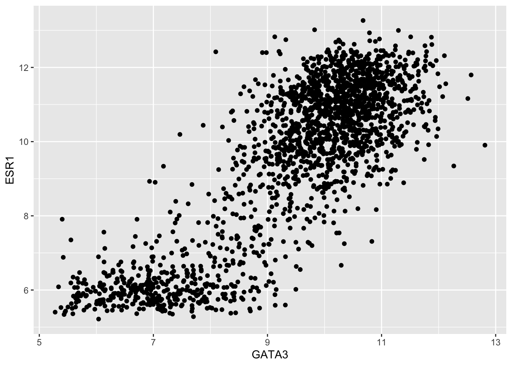
We specified 3 things to create this plot:
- The data – needs to be a data frame (or a tibble)
- The type of plot – this is called a geom in ggplot2 terminology
- The mapping of variables in the data to visual properties of objects in the plot - these are called aesthetics in ggplot2
In this case, the type of plot is a geom_point, ggplot2’s function for a scatter plot, and the expression of the genes GATA3 and ESR1 (estrogen receptor alpha) are mapped to the x and y coordinates, i.e. the positions of points on the scatter plot.
Other aesthetics include the size, shape and colour of the points. It might seem a little surprising that the x and y coordinates are treated in the same way as we wouldn’t normally think about these as having aesthetic qualities but this is indeed the case with ggplot2.
Aesthetic mappings
Look up the geom_point help page to see the list of aesthetics that are available for this geom.
?geom_pointIf you scroll down to the aesthetics section in the help page for geom_point, you’ll see that the x and y aesthetics are in bold face which tells us that these are required, i.e. you have to supply them, otherwise you’ll get an error message from ggplot.
Other aesthetics such as size, shape, colour and transparency (alpha) are optional.
So what about those other aesthetics? Colours are usually fun – let’s try to use the colour aesthetic.
We need to map a variable to a colour just like we did for x and y. We’ll use the ER status as an example.
ggplot(data = metabric) +
geom_point(mapping = aes(x = GATA3, y = ESR1, colour = ER_status))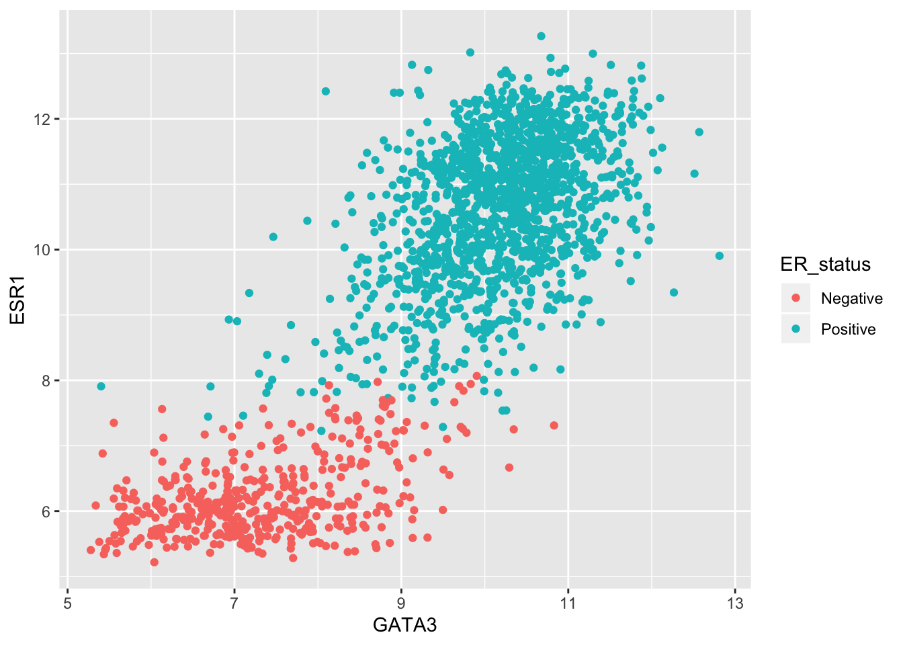
What about colouring points based on a continuous variable?
ggplot(data = metabric) +
geom_point(mapping = aes(x = GATA3, y = ESR1, colour = Nottingham_prognostic_index))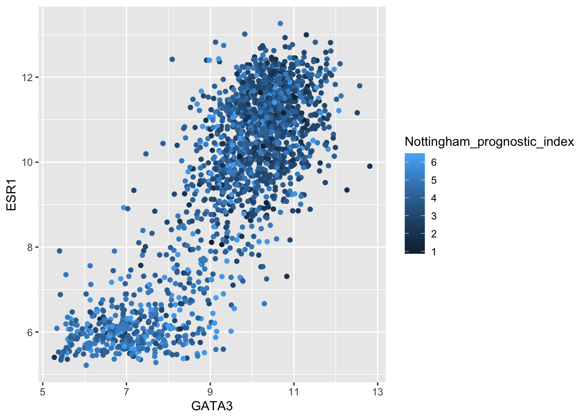
ggplot2 uses a colour scale for a continous variable but discrete colours for discrete or categorical values.
Size is not usually a good aesthetic to map to a variable. This is particularly the case where we have such a large number of observations.
ggplot(data = metabric) +
geom_point(mapping = aes(x = GATA3, y = ESR1, size = ER_status))## Warning: Using size for a discrete variable is not advised.
Some aesthetics, such as size, are designed to be used with continuous variables. If you map these to a discrete variable as we have done here, then ggplot warns you that this isn’t such a good idea.
It would however be useful to be able to decrease the size of the points given that there are around 2000 in this data set. We can do so by setting the size to a single value rather than mapping it to one of the variables in the data set - this has to be done outside the aesthetic mappings, i.e. outside the aes() bit.
ggplot(data = metabric) +
geom_point(mapping = aes(x = GATA3, y = ESR1, colour = Nottingham_prognostic_index), size = 0.5)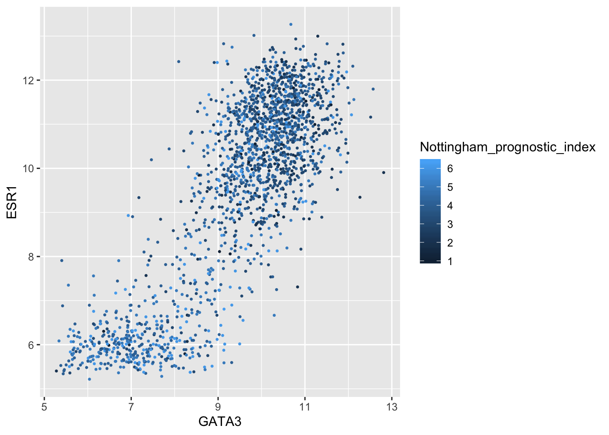
Some aesthetics can only be used with categorical variables, e.g. shape.
ggplot(data = metabric) +
geom_point(mapping = aes(x = GATA3, y = ESR1, shape = Survival_time))Error: A continuous variable can not be mapped to shapeHere we set the shape based on the 3-gene classifier.
ggplot(data = metabric) +
geom_point(mapping = aes(x = GATA3, y = ESR1, shape = `3-gene_classifier`), size = 0.9)## Warning: Removed 204 rows containing missing values (geom_point).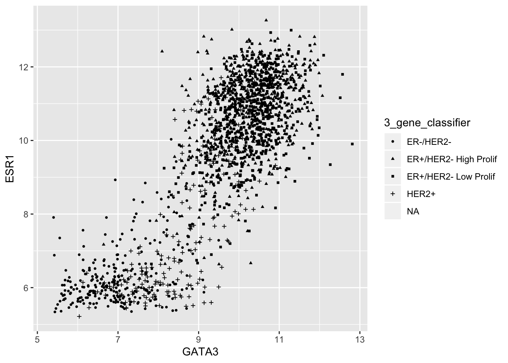
Note that some of the patient samples have not been classified and ggplot has removed those points with missing values for the 3-gene classifier.
It is usually preferable to use colours to distinguish between different categories but sometimes colour and shape are used together where we want to show which group a data point belongs to in two different categorical variables.
ggplot(data = metabric) +
geom_point(mapping = aes(x = GATA3, y = ESR1, colour = PAM50, shape = `3-gene_classifier`), size = 0.9)## Warning: Removed 204 rows containing missing values (geom_point).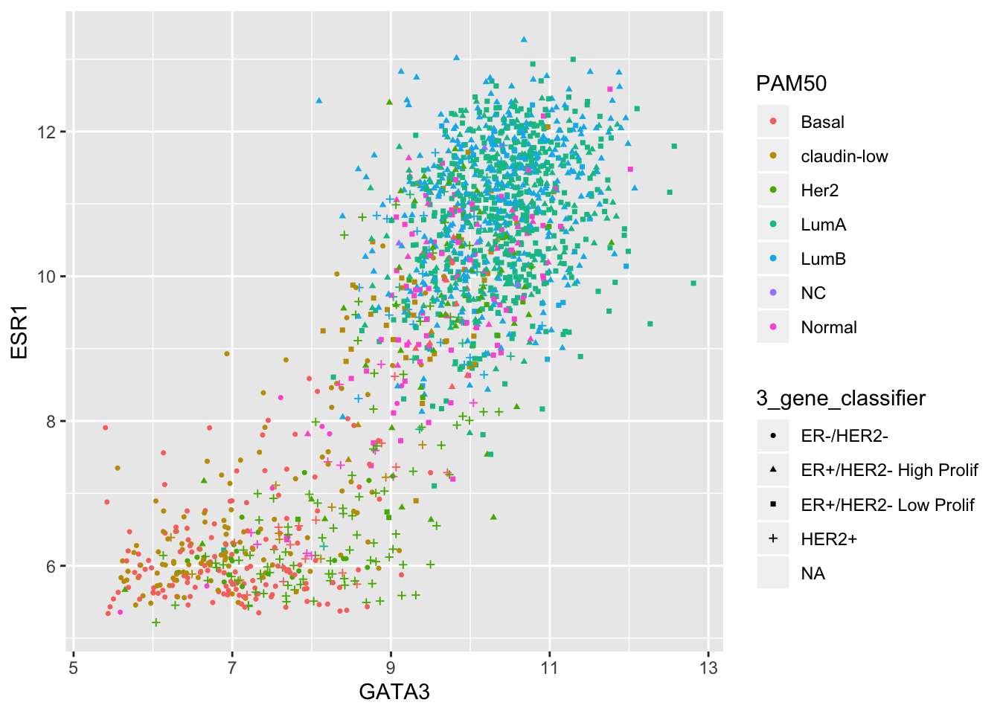
Transparency can be useful when we have a large number of points as we can more easily tell when points are overlaid, but like size, it is not usually mapped to a variable and sits outside the aes().
ggplot(data = metabric) +
geom_point(mapping = aes(x = GATA3, y = ESR1, colour = `3-gene_classifier`), size = 0.75, alpha = 0.5)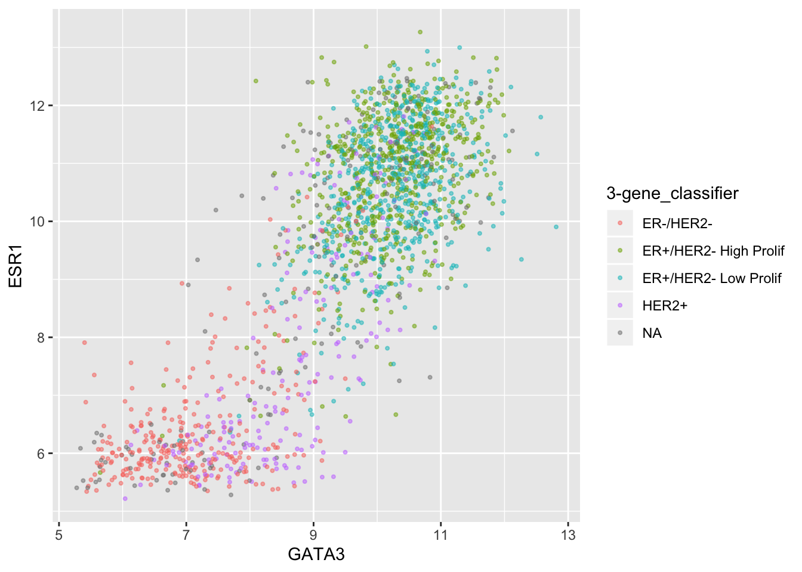
Colours are more commonly used than shapes, sizes or transparency.
Virtually every aspect of the plots we’ve created can be customized. We will learn how to change the colours used as well as other display parameters later in the course.
ggplot2 grammar
The “gg” in ggplot2 stands for “grammar of graphics”. This grammar is a coherent system for describing and building graphs.
The basic template is given in the summary box below. This template can be used to create any of a wide range of graph types with ggplot2.
ggplot2 grammar of graphics
ggplot(data = <DATA>) + <GEOM_FUNCTION>(mapping = aes(<MAPPINGS>))
ggplot() creates the plot object.
Layers can be added by adding geoms such as geom_point() using the + operator that ggplot2 has overridden for this purpose.
Another plot type - bar chart
The range of geoms available in ggplot2 can be obtained by navigating to the ggplot2 package in the Packages tab pane in RStudio (bottom right-hand corner) and scrolling down the list of functions sorted alphabetically to the geom_... functions.
The METABRIC study redefined how we think about breast cancer by identifying and characterizing several new subtypes, referred to as integrative clusters. Let’s create a bar chart of the number of patients whose cancers fall within each subtype in the METABRIC cohort.
geom_bar is the geom we need and it requires a single aesthetic mapping of the categorical variable of interest to x.
ggplot(data = metabric) +
geom_bar(mapping = aes(x = Integrative_cluster))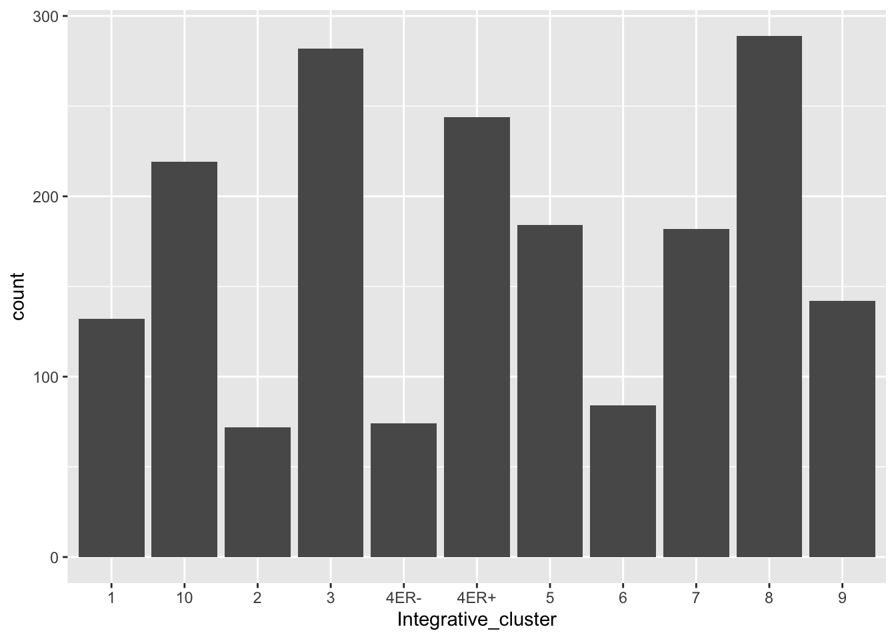
The dark grey bars are a big ugly - what if we want each bar to be a different colour?
ggplot(data = metabric) +
geom_bar(mapping = aes(x = Integrative_cluster, colour = Integrative_cluster))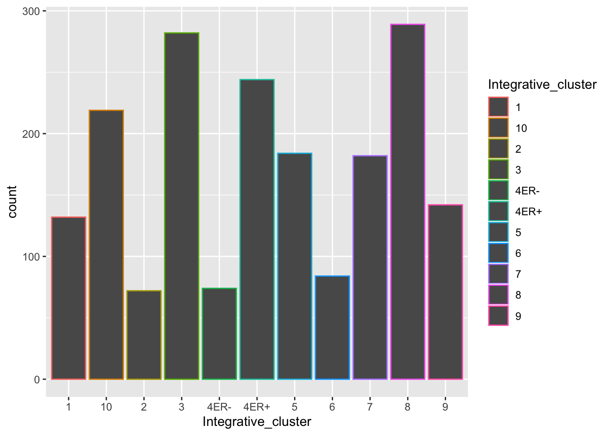
Colouring the edges wasn’t quite what we had in mind. Look at the help for geom_bar to see what other aesthetic we should have used.
ggplot(data = metabric) +
geom_bar(mapping = aes(x = Integrative_cluster, fill = Integrative_cluster))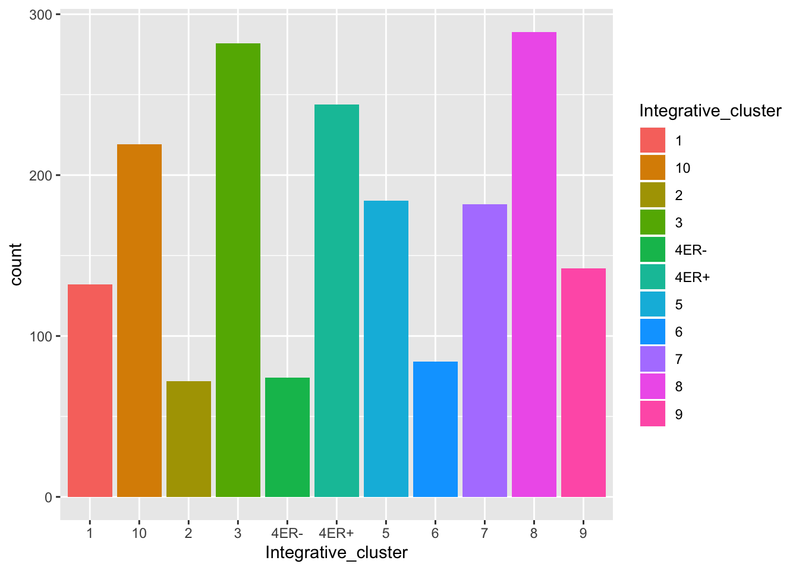
What happens if we colour (fill) with something other than the integrative cluster?
ggplot(data = metabric) +
geom_bar(mapping = aes(x = Integrative_cluster, fill = ER_status))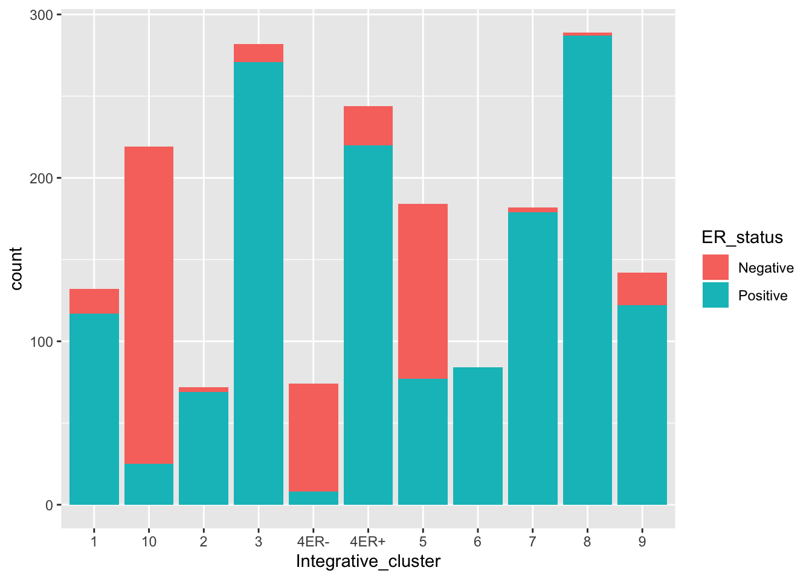
We get a stacked bar plot.
Note the similarity in what we did here to what we did with the scatter plot - there is a common grammar.
Let’s try another stacked bar plot, this time with a categorical variable with more than two categories.
ggplot(data = metabric) +
geom_bar(mapping = aes(x = Integrative_cluster, fill = `3-gene_classifier`))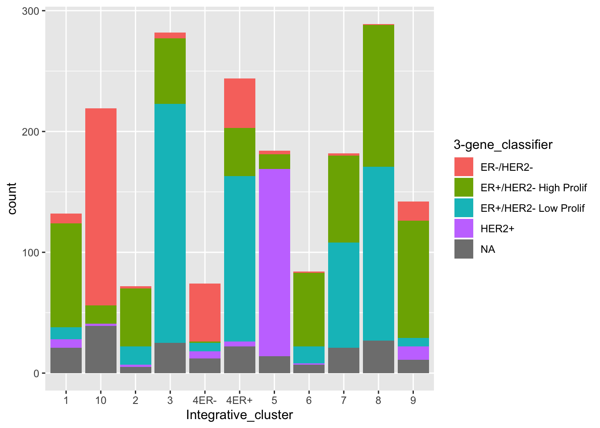
What if want all the bars to be the same colour but not dark grey, e.g. blue?
ggplot(data = metabric) +
geom_bar(mapping = aes(x = Integrative_cluster, fill = "blue"))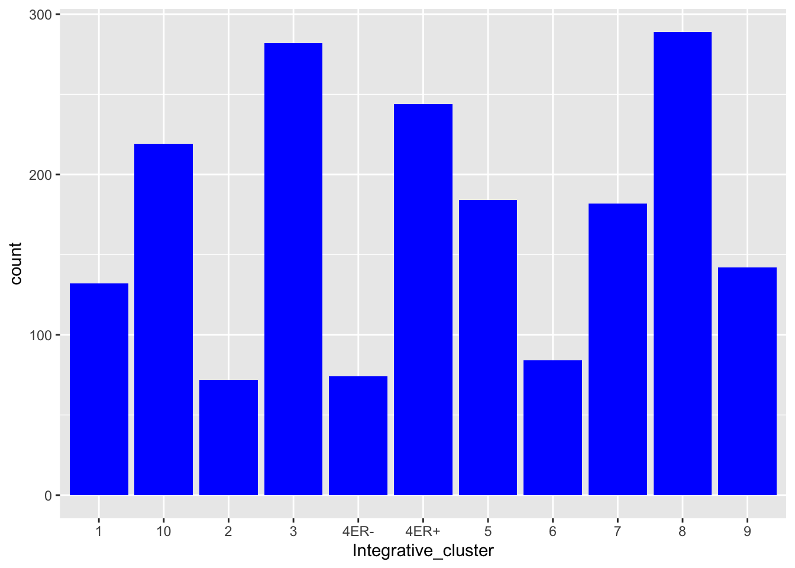
That doesn’t look right - why not?
You can set the aesthetics to a fixed value but this needs to be outside the mapping, just like we did before for size and transparency in the scatter plots.
ggplot(data = metabric) +
geom_bar(mapping = aes(x = Integrative_cluster), fill = "blue")
Setting this inside the aes() mapping told ggplot2 to map the colour aesthetic to some variable in the data frame, one that doesn’t really exist but which is created on-the-fly with a value of “blue” for every observation.
Statistical transformations (ADVANCED)
You may have noticed that ggplot2 didn’t just plot values from our data set but had to do some calculation first for the bar chart, i.e. it had to sum the number of observations in each category.
Each geom has a statistical transformation. In the case of the scatter plot, geom_point uses the “identity” transformation which means just use the values as they are, i.e. not really a transformation at all. The statistical transformation for geom_bar is “count”, which means it will count the number of observations for each category in the variable mapped to the x aesthetic.
You can see which statistical transformation is being used by a geom by looking at the stat argument in the help page for that geom.
There are some circumstances where you’d want to change the stat, for example if we already had count values in our table.
counts <- tibble(
`3-gene_classifier` = c("ER-/HER2-", "ER+/HER2- High Prolif", "ER+/HER2- Low Prolif", "HER2+"),
count = c(290, 603, 619, 188)
)
counts## # A tibble: 4 x 2
## `3-gene_classifier` count
## <chr> <dbl>
## 1 ER-/HER2- 290
## 2 ER+/HER2- High Prolif 603
## 3 ER+/HER2- Low Prolif 619
## 4 HER2+ 188ggplot(data = counts) +
geom_bar(mapping = aes(x = `3-gene_classifier`, y = count), stat = "identity")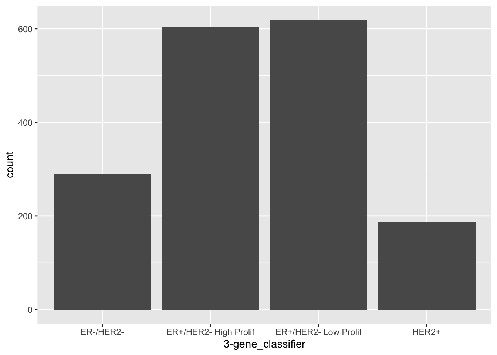
Multiple layers
Consider again the ggplot2 grammar:
ggplot(data = <DATA>) +
<GEOM_FUNCTION>(mapping = aes(<MAPPINGS>))Why do we have the ggplot part and geom part joined by a “+” symbol?
The ‘+’ operator has been overridden by ggplot2 to add layers (geoms) and other components (scales, themes, etc.) to the plot.
We can have multiple geoms in the same plot. Each is a different layer.
Let’s create a plot with two geoms.
ggplot(data = metabric) +
geom_point(mapping = aes(x = GATA3, y = ESR1)) +
geom_smooth(mapping = aes(x = GATA3, y = ESR1))## `geom_smooth()` using method = 'gam' and formula 'y ~ s(x, bs = "cs")'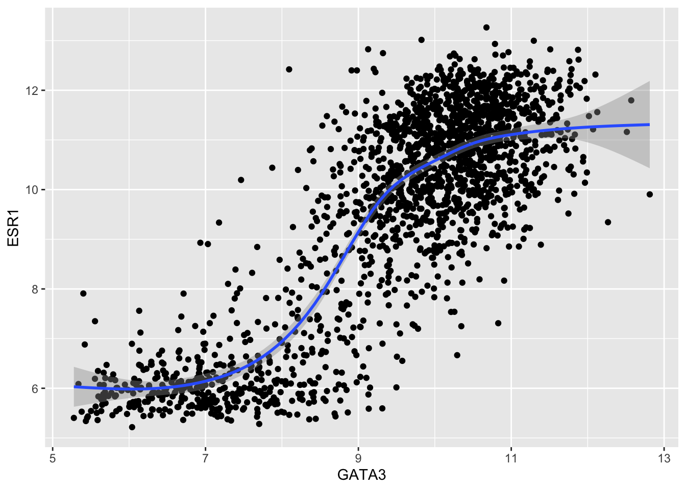
What is geom_smooth() doing? Look up the help page.
Note that the shaded area surrounding blue line represents the standard error bounds on the fitted model.
It is important when breaking these ggplot statements across multiple lines to ensure that the + is at the end of the line so that R knows you haven’t finished constructing your plot.
There is some annoying duplication of code used to create this plot. We’ve repeated the exact same aesthetic mapping for both geoms. We can avoid this by putting the mappings in the ggplot() function instead.
ggplot(data = metabric, mapping = aes(x = GATA3, y = ESR1)) +
geom_point() +
geom_smooth()## `geom_smooth()` using method = 'gam' and formula 'y ~ s(x, bs = "cs")'
Let’s make the plot look a bit prettier by reducing the size of the points and making them transparent. We’re not mapping size or alpha to any variables, just setting them to constant values, and we only want these settings to apply to the points, so we set them inside geom_point().
ggplot(data = metabric, mapping = aes(x = GATA3, y = ESR1)) +
geom_point(size = 0.5, alpha = 0.5) +
geom_smooth()## `geom_smooth()` using method = 'gam' and formula 'y ~ s(x, bs = "cs")'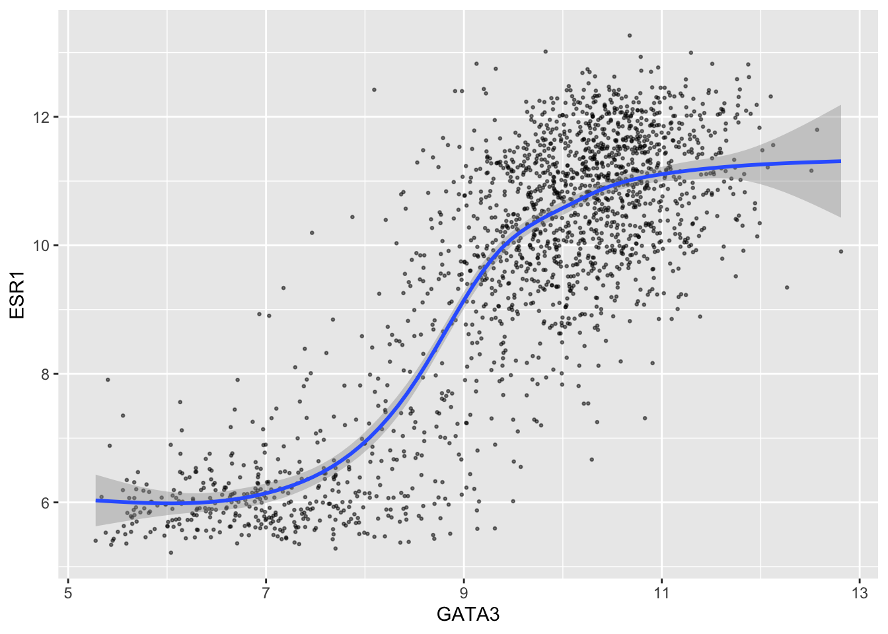
Aesthetics set in the ggplot function are treated as global mappings for the plot and are inherited by all geoms added to the plot.
Let’s say we still want to colour the points by ER status.
ggplot(data = metabric, mapping = aes(x = GATA3, y = ESR1, colour = ER_status)) +
geom_point(size = 0.5, alpha = 0.5) +
geom_smooth()## `geom_smooth()` using method = 'gam' and formula 'y ~ s(x, bs = "cs")'
Well, that wasn’t expected, although it’s pretty neat. We only wanted to apply the colour aesthetic to the points.
We can add the colour aesthetic to the geom_point() function instead of as a global mapping in the ggplot() function.
ggplot(data = metabric, mapping = aes(x = GATA3, y = ESR1)) +
geom_point(mapping = aes(colour = ER_status), size = 0.5, alpha = 0.5) +
geom_smooth()## `geom_smooth()` using method = 'gam' and formula 'y ~ s(x, bs = "cs")'
Or suppose you’ve spent a bit of time getting your scatter plot just right and decide to add another layer but you’re a bit worried about interfering with the the code you so lovingly crafted, you can set the inherit.aes option to FALSE and set the aesthetic mappings explicitly for your new layer.
ggplot(data = metabric, mapping = aes(x = GATA3, y = ESR1, colour = ER_status)) +
geom_point(size = 0.5, alpha = 0.5) +
geom_smooth(mapping = aes(x = GATA3, y = ESR1), inherit.aes = FALSE)## `geom_smooth()` using method = 'gam' and formula 'y ~ s(x, bs = "cs")'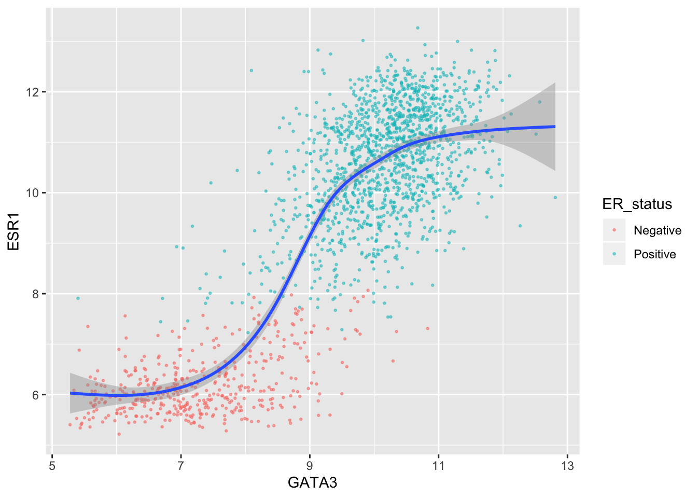
Box plots
Box plots are a particular favourite of Wednesday lunchtime seminars.
ggplot(data = metabric, mapping = aes(x = ER_status, y = GATA3)) +
geom_boxplot()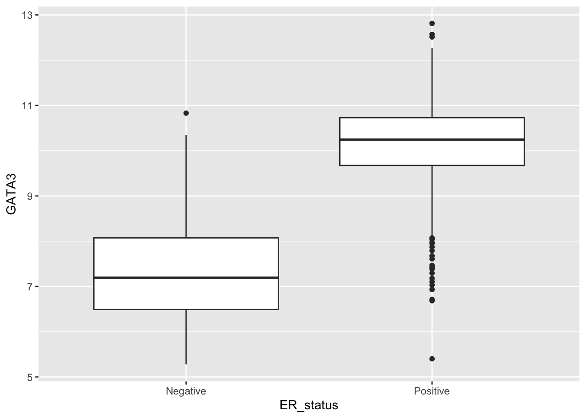
See geom_boxplot help to explain how the box and whiskers are constructed and how it decides which points are outliers and should be displayed as points.
How about adding another layer to display all the points?
ggplot(data = metabric, mapping = aes(x = ER_status, y = GATA3)) +
geom_boxplot() +
geom_point()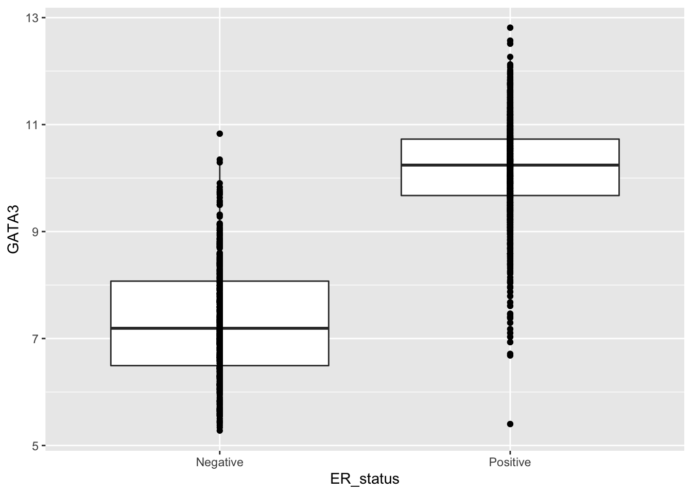
Ideally, we’d like these points to be spread out a bit. The geom_point help points to geom_jitter as more suitable when one of the variables is categorical.
ggplot(data = metabric, mapping = aes(x = ER_status, y = GATA3)) +
geom_boxplot() +
geom_jitter()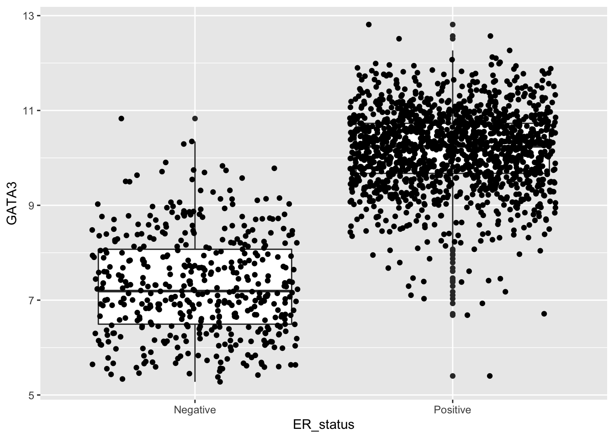
Well, that’s a bit of a mess. We need to reduce the spread or jitter and make the points smaller and transparent.
ggplot(data = metabric, mapping = aes(x = ER_status, y = GATA3)) +
geom_boxplot() +
geom_jitter(width = 0.3, size = 0.5, alpha = 0.25)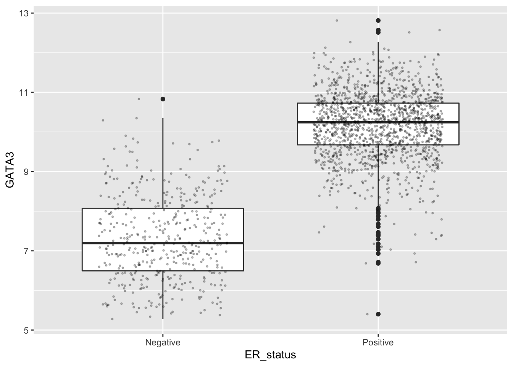
Displaying points in this way makes much more sense when we only have a few observations and where the box plot masks the fact, perhaps giving the false impression that the sample size is larger than it actually is. Here it makes less sense as we have very many observations.
Let’s try a colour aesthetic to also look at how estrogen receptor expression differs between HER2 positive and negative tumours.
ggplot(data = metabric, mapping = aes(x = ER_status, y = GATA3, colour = HER2_status)) +
geom_boxplot()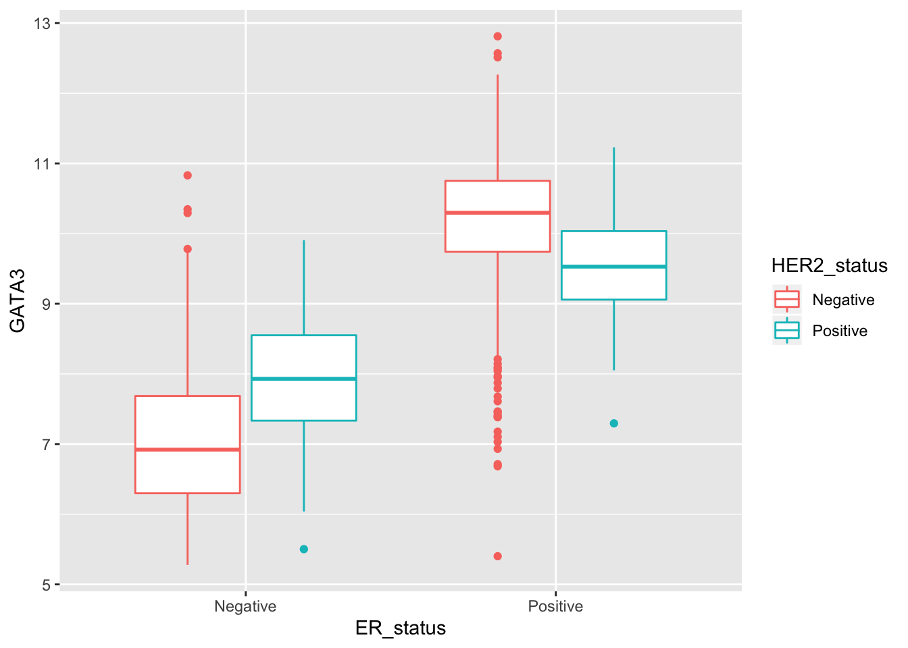
Time series data
The next type of plot we’re going to look at is a line plot. Line plots are a common visualization for time series data but we don’t have data of this kind in the METABRIC data set so we’ll turn our attention to a more topical data set.
COVID-19 data set
Every day the UK Government presents a series of plots showing data relating to the coronavirus (COVID-19) pandemic. Both the plots and the data are published on the Government’s website.
One of the plots shows the reduction in different types oftransport use over time in the UK in the week leading up to and since the lockdown restrictions were introduced in response to the pandemic.
Reading these data into R from the downloaded Excel spreadsheet requires a bit more care as the spreadsheet contains multiple sheets and each table has header lines and footnotes. The date column doesn’t have a column heading, so in the code below we’ve skipped that row as well and told read_excel() what column names to use. We’ve also given it a heads-up about which type of data are in each column. Look up the help page for read_excel() for more details about the arguments we’ve used below.
library(readxl)
transport_use <- read_excel("data/2020-04-26_COVID-19_Press_Conference_Data.xlsx",
sheet = "Transport use",
col_names = c("date", "transport_type", "percentage"),
col_types = c("date", "text", "numeric"),
skip = 4,
n_max = 186)
transport_use$percentage <- transport_use$percentage * 100
transport_use## # A tibble: 186 x 3
## date transport_type percentage
## <dttm> <chr> <dbl>
## 1 2020-03-16 00:00:00 All motor vehicles 98
## 2 2020-03-17 00:00:00 All motor vehicles 89
## 3 2020-03-18 00:00:00 All motor vehicles 83
## 4 2020-03-19 00:00:00 All motor vehicles 82
## 5 2020-03-20 00:00:00 All motor vehicles 81
## 6 2020-03-21 00:00:00 All motor vehicles 73
## 7 2020-03-22 00:00:00 All motor vehicles 69
## 8 2020-03-23 00:00:00 All motor vehicles 69
## 9 2020-03-24 00:00:00 All motor vehicles 49
## 10 2020-03-25 00:00:00 All motor vehicles 42
## # … with 176 more rowsIn this data set each row represents an observation of the current traffic volume for various modes of transport (motor vehicle, bus, train, etc.) since 16 March as a percentage of the volume measured during the first week of February.
So let’s get a feel for this data set. Firstly, what modes of transport are included and how many observations do we have for each?
table(transport_use$transport_type)##
## All motor vehicles Bus (excl. London) National rail
## 40 40 40
## TfL - Bus TfL - Tube
## 34 32We’ll focus solely on rail use to start with.
rail_use <- transport_use[transport_use$transport_type == "National rail", ]
rail_use## # A tibble: 40 x 3
## date transport_type percentage
## <dttm> <chr> <dbl>
## 1 2020-03-16 00:00:00 National rail 77
## 2 2020-03-17 00:00:00 National rail 69
## 3 2020-03-18 00:00:00 National rail 59
## 4 2020-03-19 00:00:00 National rail 52
## 5 2020-03-20 00:00:00 National rail 44
## 6 2020-03-21 00:00:00 National rail 38
## 7 2020-03-22 00:00:00 National rail 35
## 8 2020-03-23 00:00:00 National rail 29.0
## 9 2020-03-24 00:00:00 National rail 24
## 10 2020-03-25 00:00:00 National rail 18
## # … with 30 more rowsDates
There is something unfamiliar about the date column that needs some explanation. Let’s check the type and class of date.
typeof(rail_use$date)## [1] "double"class(rail_use$date)## [1] "POSIXct" "POSIXt"So the date column is stored as a double and is a suitable continuous variable for a line plot but it’s also got some special properties, afforded to it by its POSIXct class, that allows it to be treated as a date.
The POSIXct class is how R represents dates, where POSIX is a standardization scheme in the world of computers, spanning multiple operating systems and programming languages, and the ct part stands for calendar time. We won’t go into the details here but note that the numeric representation of a date, i.e. the double value, is the number of seconds since 1 January 1970. For example, the date in our first row is:
rail_use$date[1]## [1] "2020-03-16 UTC"as.double(rail_use$date[1])## [1] 1584316800Line plot
We’re going to plot the volume of traffic on each date with each measurement represented as a point on our graph and observations on successive dates connected by a line. Looking at the geoms available in ggplot2 (see the list of functions available for ggplot2 by navigating to the ggplot2 package in the Packages tab in RStudio), it looks like geom_line is the one we need.
The aesthetics section in the help page for geom_line tells us we need an x and y mapping. Our x aesthetic will be date and the y aesthetic will be percentage.
ggplot(data = rail_use) +
geom_line(mapping = aes(x = date, y = percentage))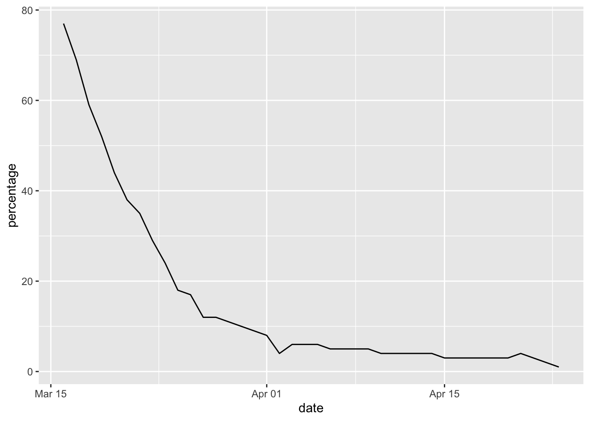
We can return to our original transport_use table containing data for all transport modes and use another aesthetic, e.g. colour, to plot a line for each.
ggplot(data = transport_use) +
geom_line(mapping = aes(x = date, y = percentage, colour = transport_type))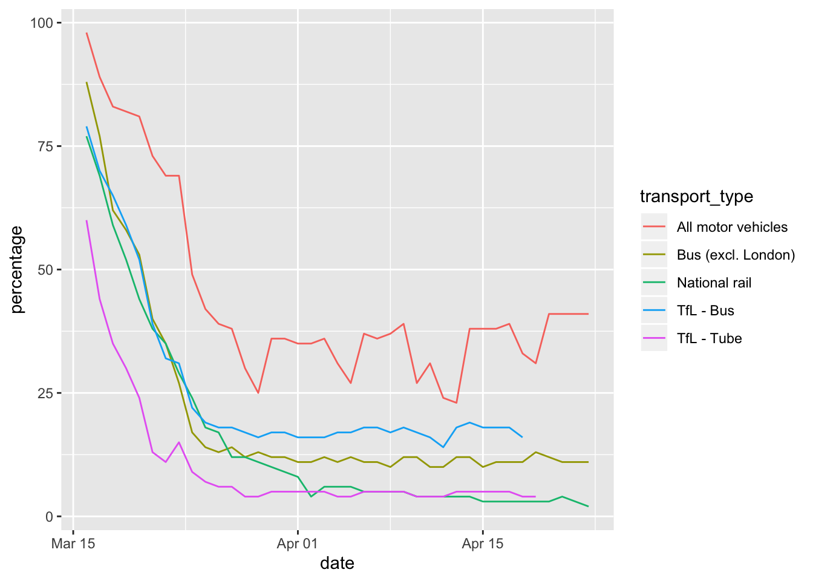
Another aesthetic available for geom_line is linetype.
ggplot(data = transport_use) +
geom_line(mapping = aes(x = date, y = percentage, linetype = transport_type))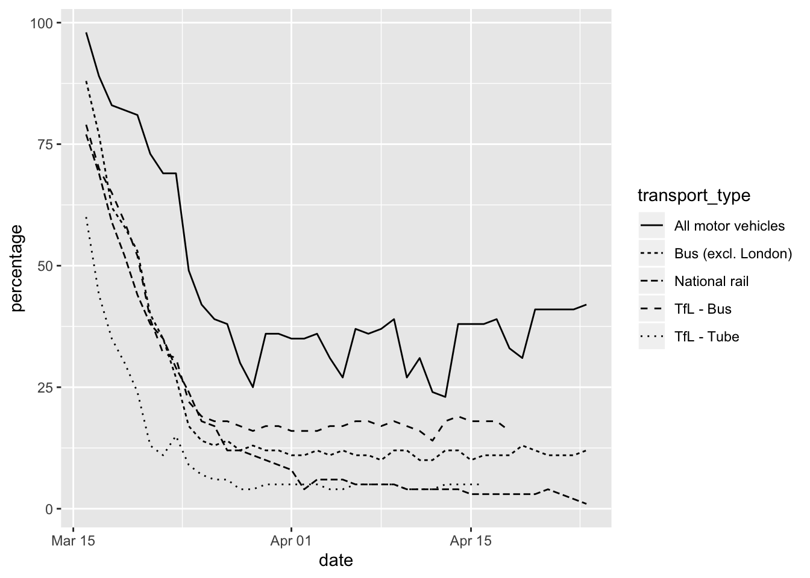
Histograms
The geom for creating histograms is, rather unsurprisingly, geom_histogram().
ggplot(data = metabric) +
geom_histogram(mapping = aes(x = Age_at_diagnosis))## `stat_bin()` using `bins = 30`. Pick better value with `binwidth`.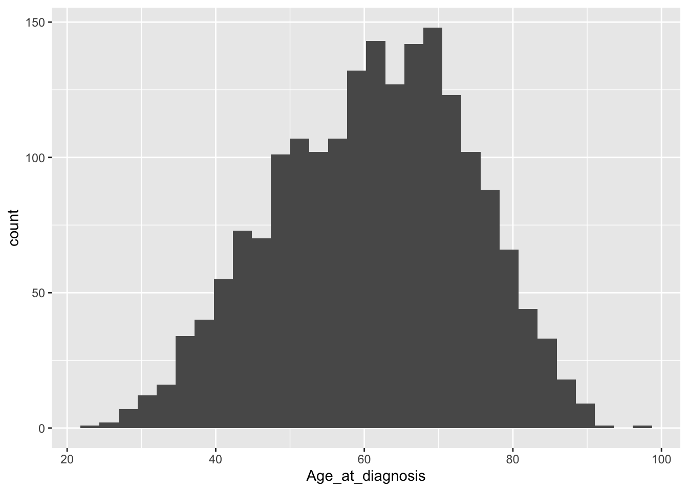
The warning message hints at picking a more optimal number of bins by specifying the binwidth argument.
ggplot(data = metabric) +
geom_histogram(mapping = aes(x = Age_at_diagnosis), binwidth = 5)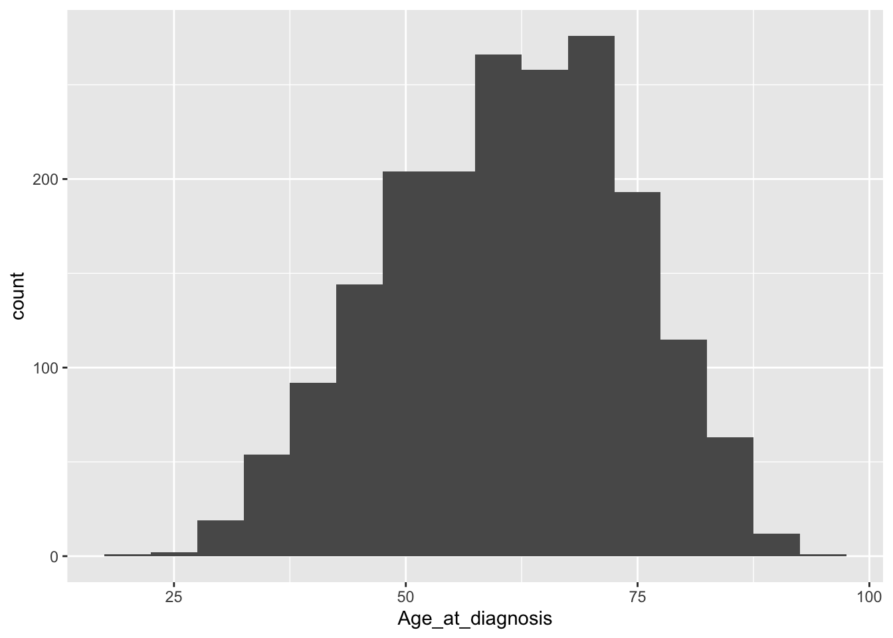
Or we can set the number of bins.
ggplot(data = metabric) +
geom_histogram(mapping = aes(x = Age_at_diagnosis), bins = 20)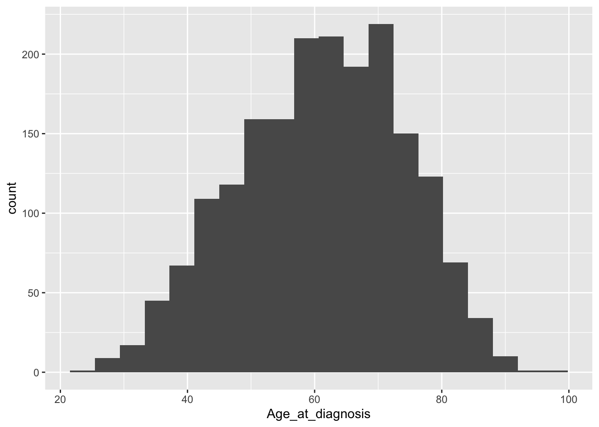
These histograms are not very pleasing, aesthetically speaking - how about some better aesthetics?
ggplot(data = metabric) +
geom_histogram(mapping = aes(x = Age_at_diagnosis), bins = 20, colour = "darkblue", fill = "grey")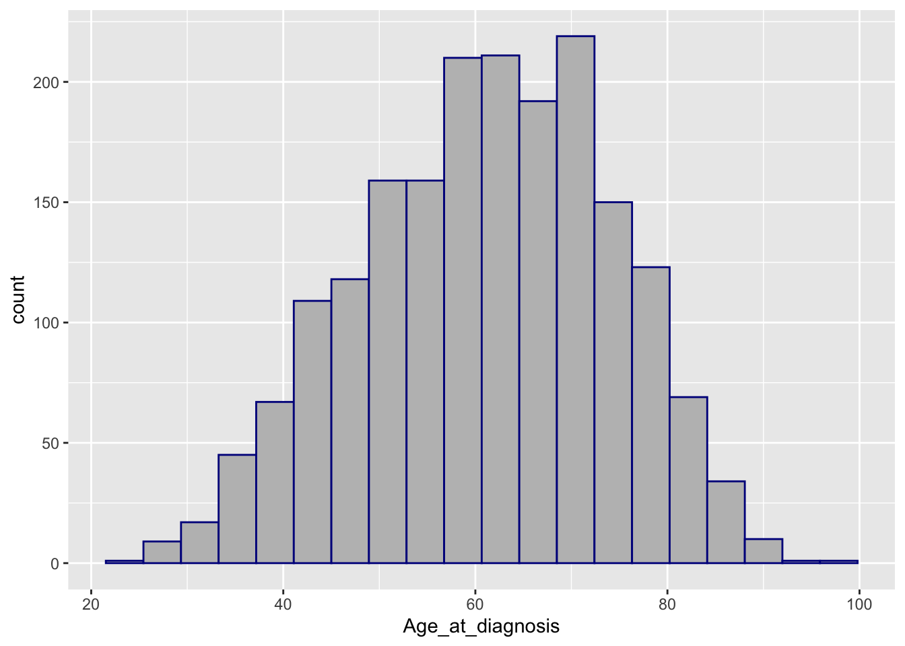
Categorical variables – factors
Several of the variables in the METABRIC data set are categorical, i.e. they can take one of a limited set of values. Some of these have been read into R as character types (e.g. the 3-gene classifier), other as numerical values, e.g. tumour stage. We also have some binary variables that are essentially categorical variables but with only 2 possible values, e.g. ER status.
In many of the plots given above, ggplot2 has treated character variables as categorical in situtations where a categorical variable is expected. For example, when we displayed points on a scatter plot using different colours for each 3-gene classification, or when we created separate box plots in the same graph for ER positive and negative patients.
But what about when our categorical variable has been read into R as a continuous variable, e.g. Tumour_stage, which is read in as a double type.
ggplot(data = metabric) +
geom_point(mapping = aes(x = GATA3, y = ESR1, colour = Tumour_stage))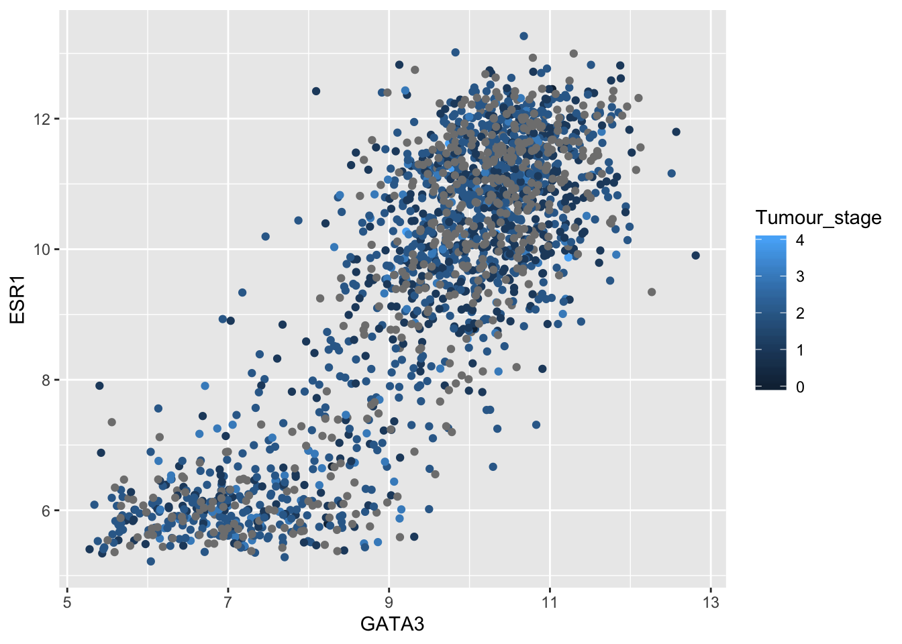
table(metabric$Tumour_stage)##
## 0 1 2 3 4
## 4 475 800 115 9Tumour stage has only 5 discrete states but ggplot2 doesn’t know these are supposed to be a restricted set of values and has used a colour scale to show them as if they were continuous. We need to tell R that these are categorical.
R has a special type for categorical variables called a factor. Let’s convert our tumour stage variable to a factor using the as.factor() function.
metabric$Tumour_stage <- as.factor(metabric$Tumour_stage)
metabric[, c("Patient_ID", "Tumour_stage")]## # A tibble: 1,904 x 2
## Patient_ID Tumour_stage
## <chr> <fct>
## 1 MB-0000 2
## 2 MB-0002 1
## 3 MB-0005 2
## 4 MB-0006 2
## 5 MB-0008 2
## 6 MB-0010 4
## 7 MB-0014 2
## 8 MB-0022 2
## 9 MB-0028 2
## 10 MB-0035 2
## # … with 1,894 more rowsR actually stores categorical variables as integers but with some additional metadata about which of the integer values, or ‘levels’, corresponds to each category.
typeof(metabric$Tumour_stage)## [1] "integer"class(metabric$Tumour_stage)## [1] "factor"levels(metabric$Tumour_stage)## [1] "0" "1" "2" "3" "4"ggplot(data = metabric) +
geom_point(mapping = aes(x = GATA3, y = ESR1, colour = Tumour_stage))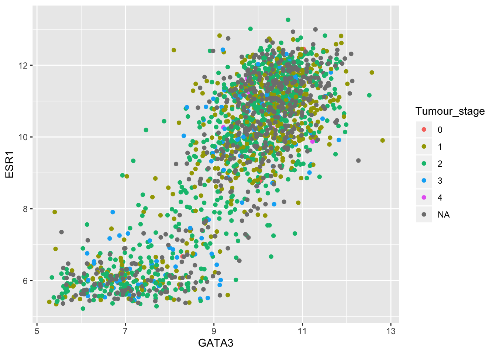
In this case the order of the levels makes sense but for other variables you may wish for more control over the ordering. Take the integrative cluster variable for example. We created a bar plot of the numbers of patients in the METABRIC cohort within each integrative cluster. Did you notice the ordering of the clusters? 10 came just after 1 and before 2. That looked a bit odd as we’d have naturally expected it to come last of all. R, on the other hand, is treating this vector as a character vector (mainly because of the ‘ER-’ and ‘ER+’ subtypes of cluster 4, and sorts the values into alphanumerical order.
metabric$Integrative_cluster <- as.factor(metabric$Integrative_cluster)
levels(metabric$Integrative_cluster)## [1] "1" "10" "2" "3" "4ER-" "4ER+" "5" "6" "7" "8"
## [11] "9"A look at the help page for as.factor shows that we can create a factor using the factor() function and specify the levels using the levels argument.
metabric$Integrative_cluster <- factor(metabric$Integrative_cluster, levels = c("1", "2", "3", "4ER-", "4ER+", "5", "6", "7", "8", "9", "10"))
levels(metabric$Integrative_cluster)## [1] "1" "2" "3" "4ER-" "4ER+" "5" "6" "7" "8" "9"
## [11] "10"ggplot(data = metabric) +
geom_bar(mapping = aes(x = Integrative_cluster, fill = Integrative_cluster))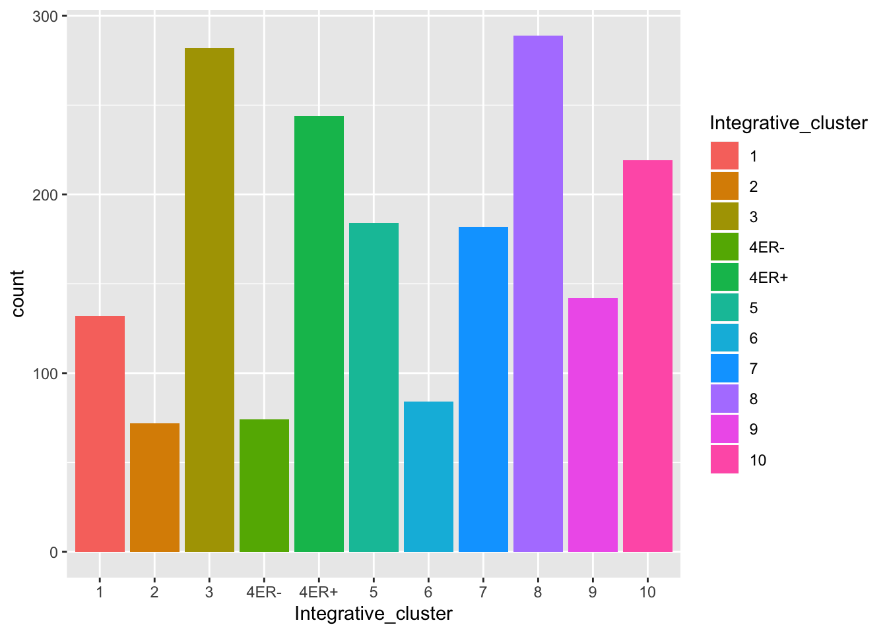
The ggplot object – a peek under the hood (ADVANCED)
Let’s build a ggplot2 plot up in stages to understand what’s really going on.
plot <- ggplot(data = metabric)What is the plot object we’ve just created?
typeof(plot)## [1] "list"length(plot)## [1] 9The plot object is a list containing 9 elements. It’s actually a special type of list.
class(plot)## [1] "gg" "ggplot"What are the 9 things in the list?
names(plot)## [1] "data" "layers" "scales" "mapping" "theme"
## [6] "coordinates" "facet" "plot_env" "labels"So far we’ve constructed ggplots from data, layers (geoms) and aesthetic mappings but do you notice the labels, scales, facet and theme elements? We’ll be looking at how to customize plots later, including changing the labels, altering the scales of axes, and applying a different visual theme.
The data element is just the metabric tibble that we provided to the ggplot() function.
plot$data## # A tibble: 1,904 x 30
## Patient_ID Cohort Age_at_diagnosis Survival_time Survival_status
## <chr> <dbl> <dbl> <dbl> <chr>
## 1 MB-0000 1 75.6 140. LIVING
## 2 MB-0002 1 43.2 84.6 LIVING
## 3 MB-0005 1 48.9 164. DECEASED
## 4 MB-0006 1 47.7 165. LIVING
## 5 MB-0008 1 77.0 41.4 DECEASED
## 6 MB-0010 1 78.8 7.8 DECEASED
## 7 MB-0014 1 56.4 164. LIVING
## 8 MB-0022 1 89.1 99.5 DECEASED
## 9 MB-0028 1 86.4 36.6 DECEASED
## 10 MB-0035 1 84.2 36.3 DECEASED
## # … with 1,894 more rows, and 25 more variables: Vital_status <chr>,
## # Chemotherapy <chr>, Radiotherapy <chr>, Tumour_size <dbl>,
## # Tumour_stage <fct>, Neoplasm_histologic_grade <dbl>,
## # Cancer_type <chr>, ER_status <chr>, PR_status <chr>,
## # HER2_status <chr>, HER2_status_measured_by_SNP6 <chr>, PAM50 <chr>,
## # `3-gene_classifier` <chr>, Nottingham_prognostic_index <dbl>,
## # Cellularity <chr>, Integrative_cluster <fct>, Mutation_count <dbl>,
## # ESR1 <dbl>, ERBB2 <dbl>, PGR <dbl>, TP53 <dbl>, PIK3CA <dbl>,
## # GATA3 <dbl>, FOXA1 <dbl>, MLPH <dbl>This plot list object is really only a specification for how ggplot2 should create the plot. ggplot2 only renders the plot when we ask it to by printing it out to the screen by typing print(plot) or simply just plot.
We haven’t added any layers yet so what does our plot look like at this point?
plot
ggplot2 doesn’t know what to plot yet as we haven’t added a layer (geom).
plot$mapping## Aesthetic mapping:
## <empty>plot$layers## list()Lets add an aesthetic mapping.
plot <- ggplot(data = metabric, mapping = aes(x = Nottingham_prognostic_index, y = ESR1, colour = ER_status))
plot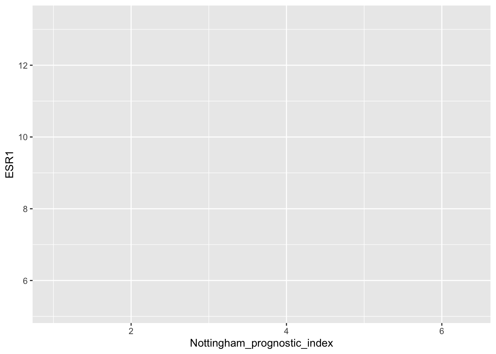
ggplot2 has automatically added scales for x and y based on the ranges of values for the Nottingham prognostic index and ESR1 expression. Still nothing has been plotted as we haven’t yet specified the type of plot (geom) to add as a layer.
plot$mapping## Aesthetic mapping:
## * `x` -> `Nottingham_prognostic_index`
## * `y` -> `ESR1`
## * `colour` -> `ER_status`plot$layers## list()Finally, let’s add a geom_point layer to create a scatter plot.
plot <- plot + geom_point()
plot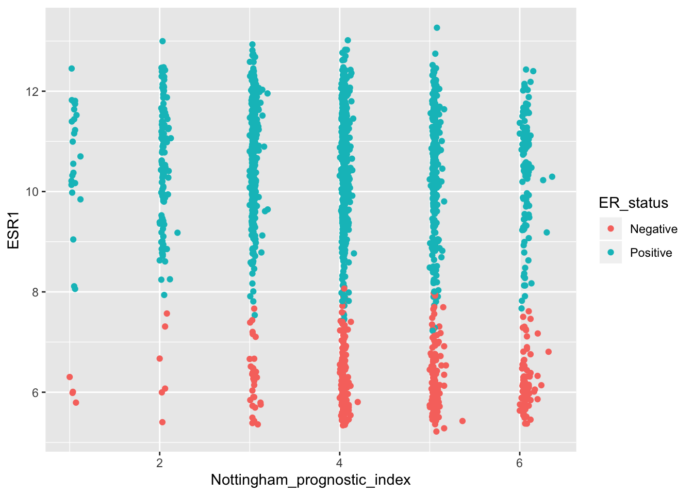
plot$layers## [[1]]
## geom_point: na.rm = FALSE
## stat_identity: na.rm = FALSE
## position_identityWe touched on statistical transformations earlier. The stat associated with a geom_point is stat_identity which leaves values unchanged. In the case of a scatter plot, we already have the x and y values – they don’t need to be transformed, just plotted on the x and y axes.
Summary
In this session we have covered the following concepts:
- How to use ggplot2 to create different types of plot using a common grammar
- How to map variables to aesthetic features of a plot
- How to construct a plot with multiple layers (geoms)
- Various types of plot including scatter plots, box plots, bar plots and histograms
- Working with dates
- Plotting time series data as line graphs
- How to work with time series data
- Categorical variables and how R handles these with its factor type
Assignment
Assignment: assignment3.Rmd